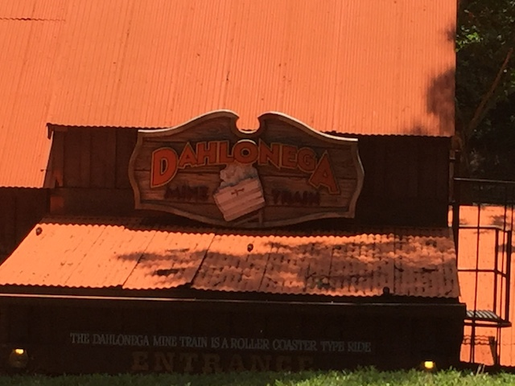

| |
Dahlonega Mine Train Review

We're here at Six Flags Over Georgia. Today's ride we'll be reviewing for you is Dahlonega Mine Train. This is the parks mine train, and...I'm just going to be honest. This is without a doubt, one of the weaker mine trains. OK, it's not as boring as...say...Trailblazer. But it's still one of the lamer mine trains. No doubt about that. How so? Let's hop in the cars and away we go. We dip down, head around a turn, and roll through some straight track. But hey! We're rolling through a shed. Eh, we're going too slow to shout anything. We head outside, roll around a turn, and begin to climb the lifthill. Finally, some action on this ride. It's a very small lifthill. Not only are we of cliff jumping height (Duh, ALL mine trains are), but we're at beginner cliff jumping heights. This is Cascade sized right here. We go around a small dip, around a banked turn, and...we're going down an incline. I know it's not straight track since we go down to the ground, but it's pretty gradual. Seriously, this thing doesn't even feel like a drop. It feels like a big wheelchair ramp. Seriously, if you built a wheelchair ramp of the same size and at the same angle, you could probably get down it safely. We then go through a banked turn. Eh...there's...some tilt. We're going so slow that you notie the banking and slide a little. Kind of weird, but mainly just showing how slow this mine train is. We then head over another banked turn before heading over a tiny hill. Normally, this would be nothing. But we have so little speed, that this actually is a challenge. Head down a tiny drop, over a little hill, around a turn, up a little incline, and look at that. Another lifthill. And it's small. Clearly this ride has no intention of...doing anything other than cruising around banked turns and tiny bumps slowly. We dip off the lifthill, and go around a big turn. So yeah. I'm right. We then head into a downward helix. But this is NOT a downward fake helix of death like on Cedar Creek Mine Ride or Goldrusher. It still has us go really slowly. Over a little bump, around a turn, and climbing another lifthill. You know, I'm just not sure what this rides goal is. I really don't know. Does it just want to be a scenic railway showcasing the nature of Six Flags Over Georgia? Cause if so, it's doing a fantastic job. If it's trying to thrill us, then it's failing misrably. Dip down, go around a turn...I'm getting bored. We roll through a shed, just more straight track. Yawn. We then head down a little drop and...WHOA!!! HOLY SH*T!!! We actually gained some speed! Seriously, it's like Bombay Blasters if it was a roller coaster. Probably just a small little drop, and maybe it's just because the rest of the ride is so boring, but it feels like a launch! And apparently in that tunnel there's a turn, because we get some laterals. So hey look! The ride is finally good. What is it going to do now? End! GOD DAMN IT!!!! Just as it stopped being boring and started to be a really good ride, back to the station. Seriously, be grateful for that final drop. That thing saves this rides ass. This ride would be NOTHING without it. It's still a pretty bad mine train, but I'd be ripping it a new one without that drop. At least that will briefly entertain you at the end.
4/10
Location: Six Flags Over Georgia
Opened: 1967
Built by: Arrow
Last Ridden: June 27, 2016
Dahlonega Mine Train Photos
Home
|